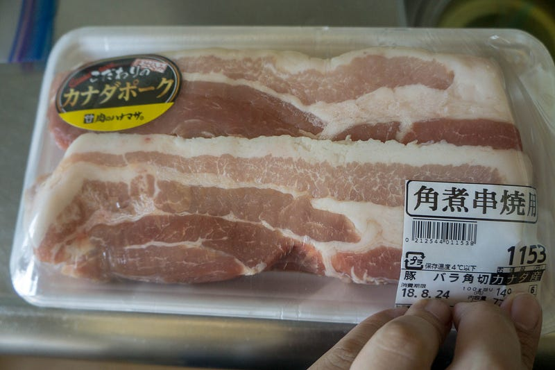
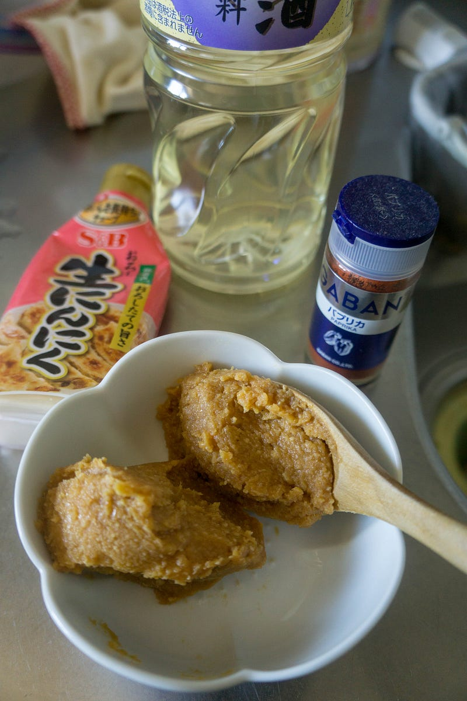
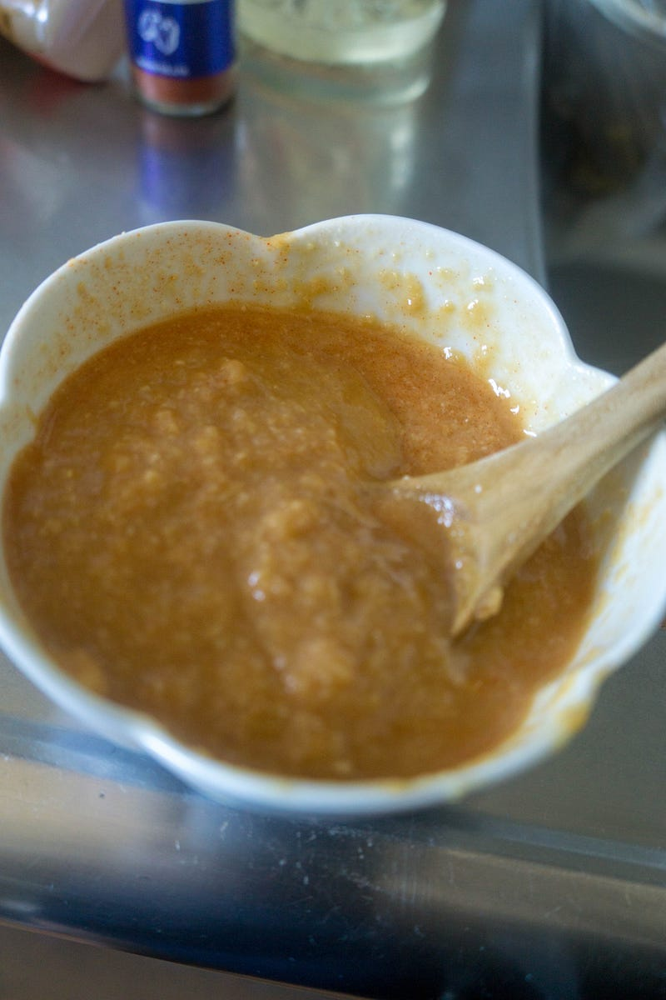
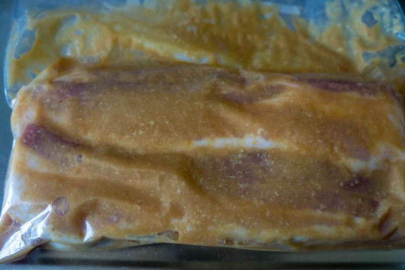
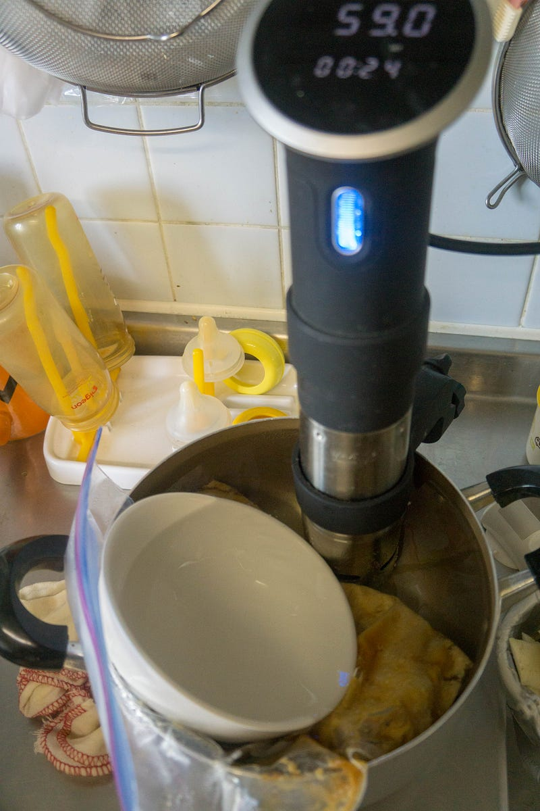
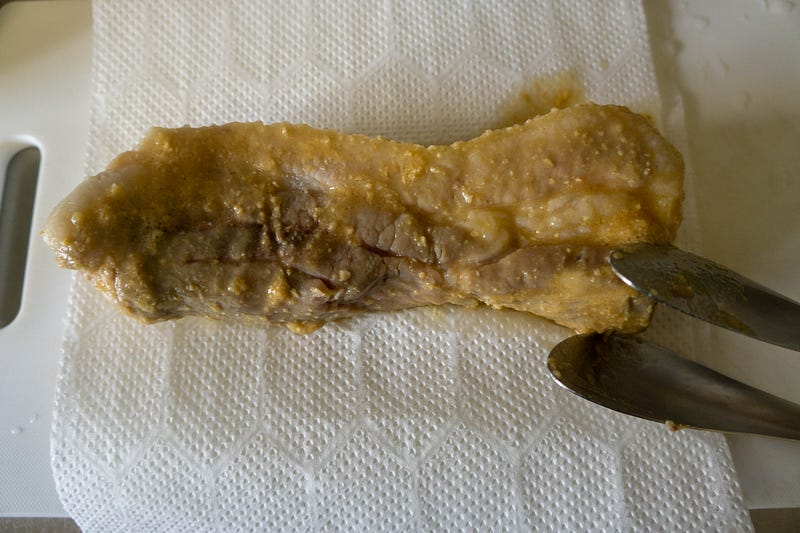
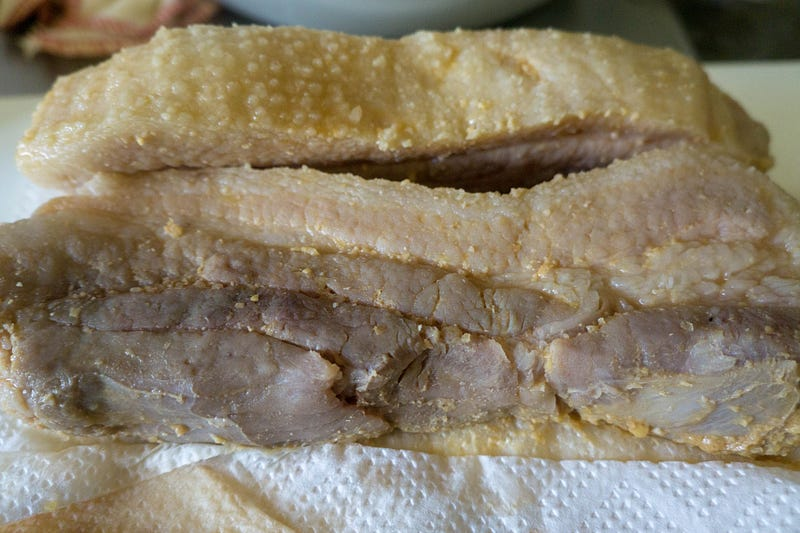
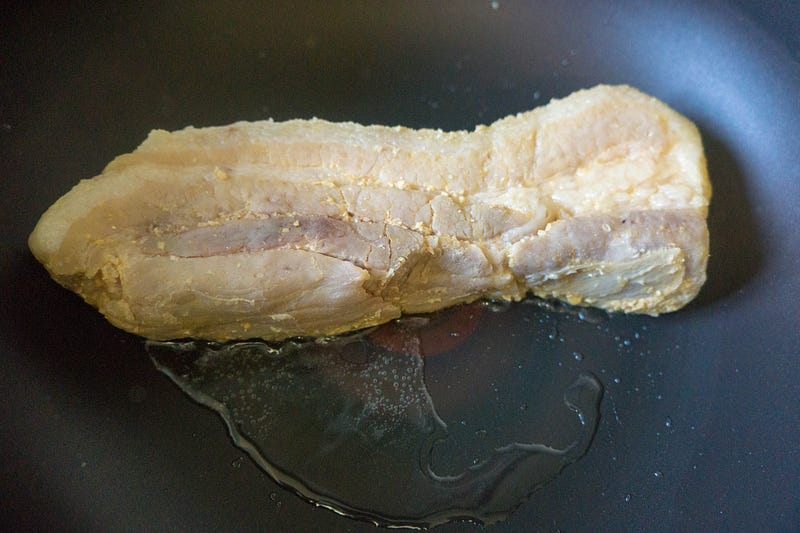
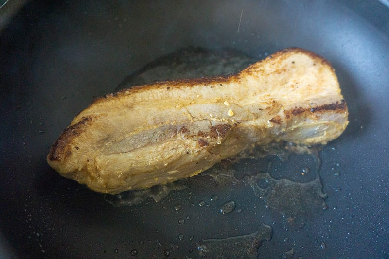
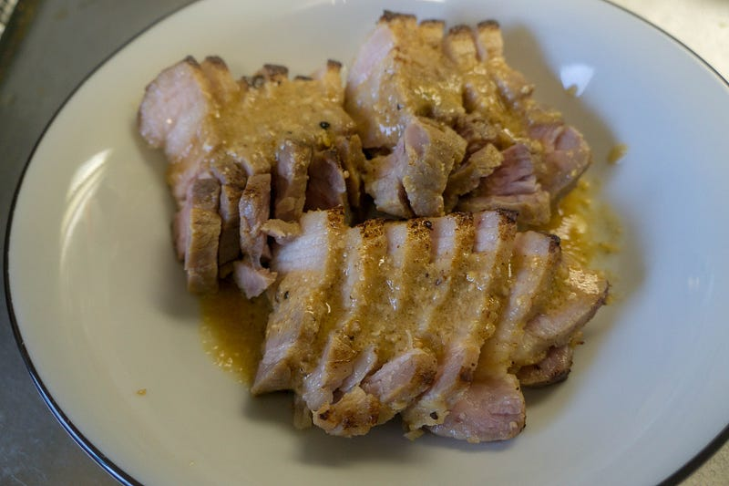

豚バラ肉の味噌漬け焼き
豚バラ肉の味噌漬け焼き
豚バラ肉の味噌漬け焼き。これは僕の大学時代の青春の料理です。当時の彼女がオーブンで焼くバージョンを作ってくれてわっしゃわっしゃと食べておりました。
まず豚バラの塊を用意します。長方形のブロックではなくて、こいう感じの短冊状の塊のほうが味がしみこみやすいし最終的に調理したり食べたりしやすいのでベターです。

つけだれは味噌、ニンニク、酒、鷹の爪… と言いたいところなんだけど、辛いのが駄目な子供達が食べるので、そこは適量のパプリカパウダーで代用。本当はわりとしっかり辛いほうがうまいと思う。

量？適量だ、そんなん。酒は味噌を溶くのに必要充分な程度OK。入れすぎるとすごい酒くさい結果になりますぞ。今回はチューブニンニクがまだ残ってたのでそれをたっぷり目にいれておいた。もちろん輪切りニンニクでもOK

この漬け汁と豚肉をジップロックに入れて、水圧によるなんちゃって真空パックで豚肉を漬けておきます。今回は冷蔵庫で丸一日。

一日経ったら、anovaで59℃、3時間。

ほい、低温調理直後。

味噌は焦げやすいので、ざっと拭き取っておきます。もっと拭いてもいいけど、僕は雑なのでこれくらいでいいです。

温めておいた油で焼きを入れます。いつものステーキと違って、ここでは最高にあっつあつの油で焼くと一瞬で焦げるので、加減しながら焼き色をつけましょう。説明が難しいんだけど、熱すぎるとこげるだけなんだけど、火が弱すぎてもなかなかちょうどいい焼き色がつかなくて火ばっかり通っちゃうので、ここはうまいことやってくれ、としかいいようがない。

まぁこんなもんかな。ちょっと西京焼きっぽい。

これを火からあげて、厚めのチャーシュー程度に切ったので味の確認。すこしまだ味が薄い感じだったので、残っていた味噌に砂糖をちょっと足して軽く煮立てて、ソースを作ってかけた。

ガツンとニンニクが効いて、学生時代か！って感じ。子供らもぱくぱくとおかわりしていた。
ソースを作る場合はつけ込んだ時の酒がちゃんと飛ぶようにしっかり火を通すんだぜ！